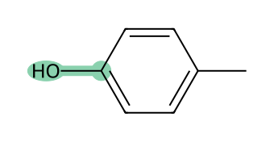
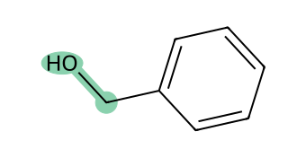

MolActAgent
An AI agent for molecular activity
Give it an untested molecule and active and inactive examples from your assay. See which structural comparisons support the prediction, where the evidence falls short, and which control could help you decide what to test next.

From assay to evidence
The teaching assay labels a molecule active when its hydroxyl is bonded directly to an aromatic carbon.
What the agent does
Inputs Assay definition, labeled references, query SMILES
- Retrieve similar moleculesFind close examples within each class.
- Compare structures and propertiesShow attachment points, descriptors and available measurements.
- Ask the language model to judgeThe LLM explains which class the comparison supports and what evidence is missing.
- Combine valid judgmentsCheck the citations and combine the votes. Leave weak or unresolved cases open.
Output Predicted class and an evidence report to review before testing
Inside one prediction

OH directly on ring
OH directly on ring

OH one carbon away
LLM judgment
The test compound matches p-cresol at the highlighted bond. Benzyl alcohol also has a hydroxyl, but it attaches to a side-chain carbon.
Missing comparison
The panel has no directly comparable fluorinated reference. The effect of para fluorination remains an open question.
Predicted active5 of 5 recorded judgments supported this label.
Inspect the evidenceReproduce this report
Use Python 3.12. The teaching run uses saved responses and needs no API key. Open molecular-output/report.html when the command finishes.
git clone --branch v0.5.0 https://github.com/studentiz/MolActAgent.git
cd MolActAgent
python3.12 -m venv .venv
source .venv/bin/activate
python -m pip install -e ".[chem]" -c examples/molecular/constraints.txt
molactagent molecular \
--reference examples/molecular/reference.csv \
--test examples/molecular/query.csv \
--replay examples/molecular/responses.json \
--output-dir molecular-output